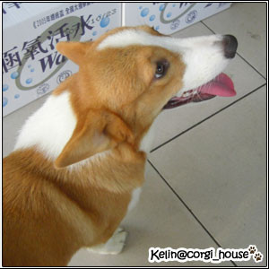
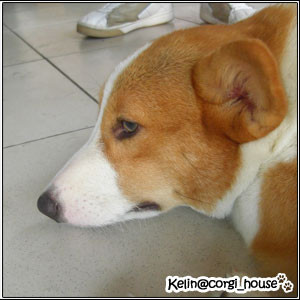
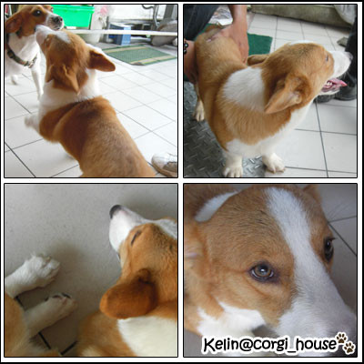

摩卡卡的麻麻(生母!哈)一胎好像生了4隻吧!!(不太清楚)
因為領養他的過程都是在雲林的葛哥幫忙處理的!!我們人在台北不方便一直請假
所以從頭到尾也沒機會看過雲林老家的家人們!!(有空下去一定要去拜訪他們一下!!不過他們真的好忙)
那時候他們幫出生的寶寶從大寶.二寶.三寶.....一直下去不知到幾寶去了!哈
為什嘛是無緣的大寶哥呢?
因為一開始葛哥說他們要送的是大寶~我們當然喜歡嘍!所以也確認了
但到去帶小狗時~他們說搞錯了!大寶已經有人要了!!應該是要送"二寶"~
so無緣的大寶哥~這次葛哥去雲林玩~我特別求他去拜訪一下拍個照回來~終於有機會看到他的樣子了!!

媽呀!!他的側面跟摩卡真的好像歐!!
都一樣毛色比較深、不大顆的眼睛、懶洋洋動作、神韻~都像是同一個娘胎出來的傢伙!
真的很奇妙吶!

話說!!!
小時候的大寶一整個看起來就是聰明靈巧!很活潑的感覺!分線也很正點(分線較寬)
小時候的二寶(摩卡)一整個看起來就是無辜乖巧!很憂鬱的感覺!分線當然也很正點(分線較窄)
不過因為有了這段小插曲~就一直對大寶哥長大的樣子很好奇!

這次看到發現大寶哥長大的臉比摩卡長一點~除此之外體型都差不多
看過摩卡的捧油悶~應該也覺得四格照裡各角度相似度有90%吧!!
記得還有一隻最小的四寶在新竹..有機會也要去認親一下
交個朋友出來狗聚一下!!還要去看一下生父生母啦!!!
聽說他們媽媽很大隻~~毛很美!!害我一度很"環樂"我家小鬼會變很大隻!!
anyway~~現在開始也要控制一下這小子的體重了!!不可以破10公斤!!(恩..恩..)